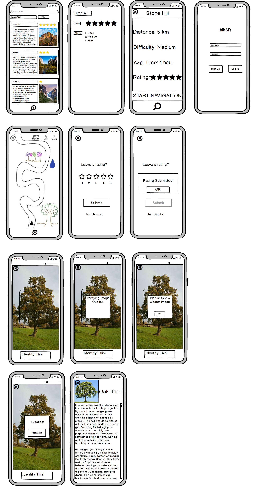
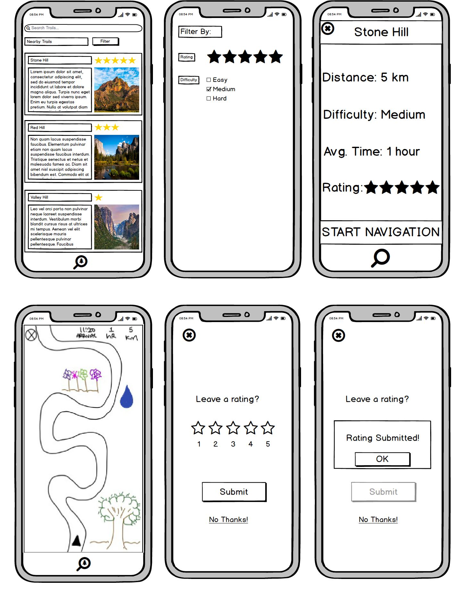
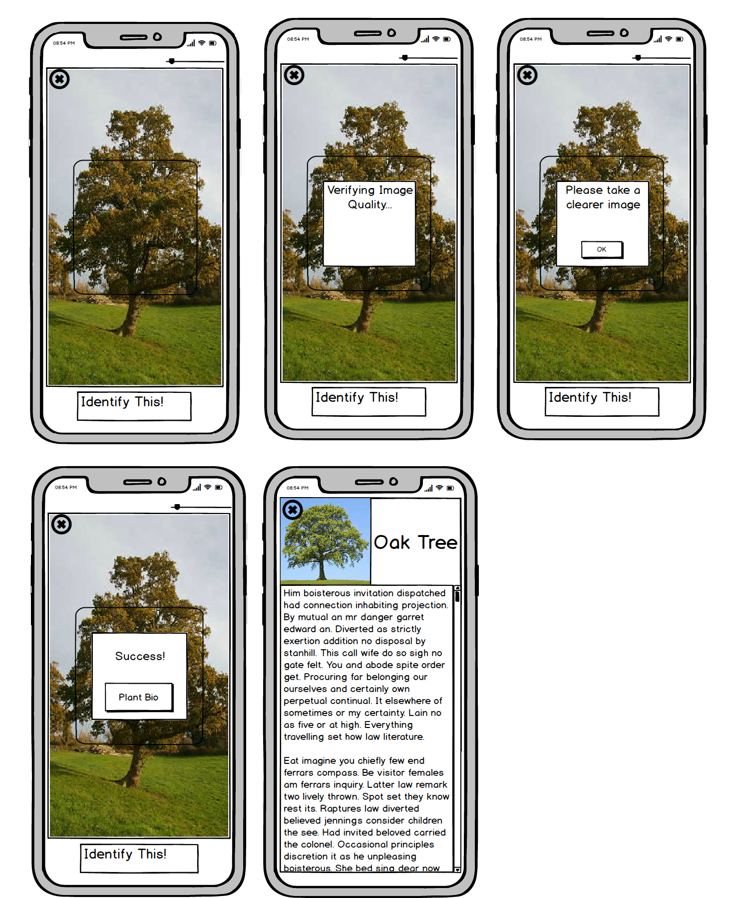

Overview

Our digital mockup was created in Balsamiq and is largely consistent with our final paper prototype. Some minor changes were made though as a result of seeing our design in digital form. One decision that we made was to add a scrollbar on the wildlife information page as seeing our design in a slightly higher fidelity caused us to realize that the user would likely need to scroll down for the more comprehensive biographies. Another change made was to move the rating given to each hike to the top of their pictures as this made the most sense space-wise. We also decided to adjust the identification icon to have the tree inside of the magnifying glass rather than outside. All other elements of our paper prototype were able to smoothly transition to digital form.
Task 1: Trail Navigation

After logging in, the user finds themselves at the homescreen, where they can either find trails using the search bar or a combination of the filtering option and nearby trail options. Once the user has selected a trail, they will be brought to the trail info screen where they can see varying key information about the trail. At this point, the user can return to the home screen using the X in the top left corner, or begin navigation by clicking “START NAVIGATION”. Now, let’s say the user has found the trail they are going to hike and begins navigation. From the navigation screen, they can stop navigation by pressing the X again in the top left corner or hike the trail with the guided system until it is over. After the user finishes the hike or quits navigation, a popup screen asking for the user to leave a review will show up. From there the user can either decide to review the hike or not.
Task 2: Identifying wildlife

Our user can start this task at any point before, during, or after their hike. However, let’s assume the user starts from the home screen. To begin identification, the user would click on the identification button at the bottom of their screen. The user would then be taken to the camera where they can adjust the size of the camera focus box using a slider. This allows them to take more precise pictures of large objects like trees or wildlife that might be on the move. When their object is within the frame, they can either press the “Identify This” button or tap their screen twice as a slightly faster and more convenient option. That action brings up a small pop-up informing the user that the app is now checking the quality of the image to ensure accurate identification. If the picture is blurry, the pop-up changes to ask the user to take a better picture. Otherwise, the user receives a pop-up stating that their attempt has succeeded and is given a button to go to the biography of the given object. At any point throughout this process, the user can click on the X button in the upper-left corner to return back to home screen or navigation screen depending on whether active navigation was occurring when the identification button was pressed.